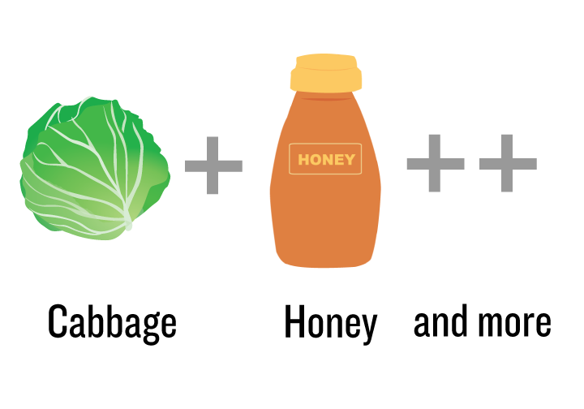
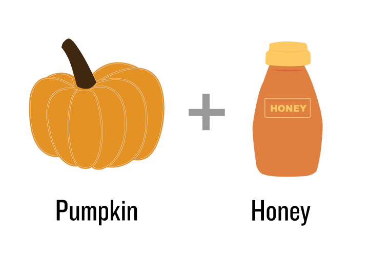
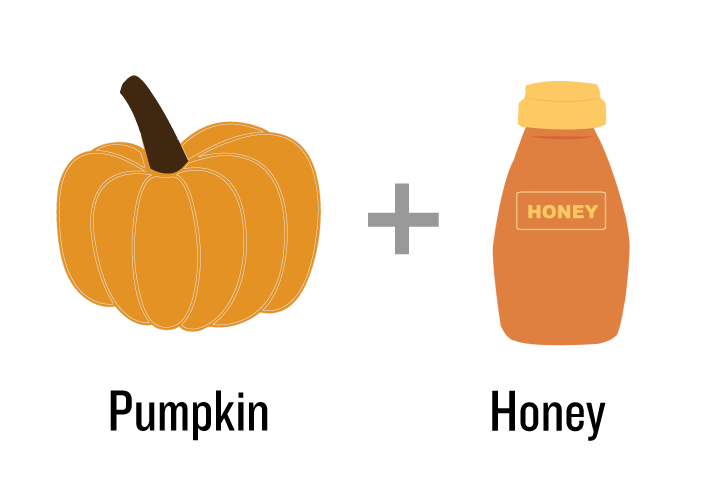

What type of mask would you like?
Anti Aging Masks
Choose your recipes


Anti Aging Recipe #1
Ingredient
- 1 Whole Green Apple
- 1 Teaspoon of Lime
Rinse and chop green apple. Blend the apple until smooth and add lime juice. Mix together and apply to clean face for 10 minutes.
Ingredient
Anti Aging Recipe #2
- 2 tablespoons yogurt
- 2 tablespoons honey
- 1/4 cup of mix berries
- 1 tablespoon lemon juice
In blender, combine ingredients until smooth. Apply on clean face, let mask sit for 10-15 min. then rinse face thoroughly with warm water and pat dry
Anti Aging Recipe #3
Ingredient
- 1/2 of a Ripe Avocado
- 1/4 cup of Honey
Mash up your avocado and mix well with honey. Apply to face and neck generously, and take a breather for at least 20 minutes.
Brightening Masks
Choose your recipes

Brightening Mask Recipe #1
Ingredient
- 1 small piece of cabbage
- 2 tablespoon of yogurt
- 1 tablespoon of honey
Clean the cabbage with water. Blend cabbage, yogurt, and honey together. Apply to clean face for 20 minutes.
Brightening Mask Recipe #2
Ingredient
- 2 tablespoon of cooked and mashed oats
- 1 table spoon lime juice
Take 2 tablespoons of cooked and mashed oats in a bowl. Add a tablespoon of fresh lime juice in the bowl. Mix Well. Apply to clean face for 25 minutes or until it dry out.
Brightening Mask Recipe #3
Ingredient
- 1 egg
- 2 tablespoon of fresh milk
- 2 tablespoons of honey
Take the egg yolk out and place it in a bowl, you can keep the egg white separately as it is a great moisturizer for your skin or else throw it. Add 2 tablespoons of milk in the bowl containing the egg yolk. Add 2 tablespoons of honey to the bowl and mix them properly. Apply it to your face using your fingers gently. Wait for at least 20 minutes and then wash it off using clean water.
Clean & Hydrate Masks
Choose your recipes
 


Clean & Hydrate Recipe #1
Ingredient
- 1 half tomato
- 2 tablespoon of lime juice
Mix the lime juice and the tomato in a blender or food processor. Process until the ingredients form a thin paste, approximately 15 to 20 seconds. With a clean brush or fingertips, apply a thin layer of the mixture to the skin. Leave the lime and tomato mixture on the skin for 15 minutes before rinsing with cool water and applying your regular moisturizer.
Clean & Hydrate Recipe #2
Ingredient
- 2 teaspoons cooked or canned pumpkin, pureed
- 1 1/2 teaspoons of honey
Mash the pumpkin and mix well with honey. Apply on face for 15 minutes.
Clean & Hydrate Recipe #3
Ingredient
- 1/2 cup unripe papaya, diced
- 1 teaspoon plain yogurt
- 1 teaspoon honey
Blend ingredients in a food processor until smooth. Apply to clean skin using fingers; leave on for 8 to 10 minutes.
Credit
- Bond, Annie B. "Pumpkin Face Mask Rich In Vitamins A, C, and Zinc." Care2. N.p., 28 Aug. 2002. Web. 17 Mar. 2013.
- Cosse, Anne. "How to Look Younger and Feel Better with Facial Rejuvenation Acupressure! - Homemade Skincare." How to Look Younger and Feel Better with Facial Rejuvenation Acupressure! - Homemade Skincare. N.p., 2009. Web. 17 Mar. 2013.
- Jamie. "DIY Beauty: Skin Brightening Papaya Mask." The Big Organic Box RSS. N.p., 21 Nov. 2012. Web. 17 Mar. 2013.